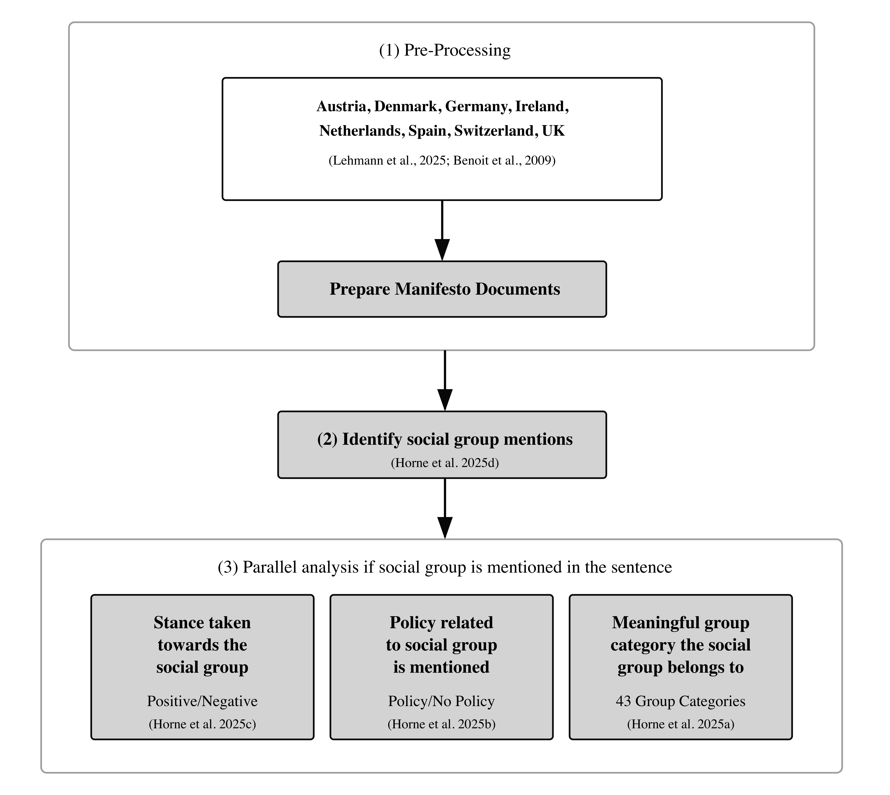
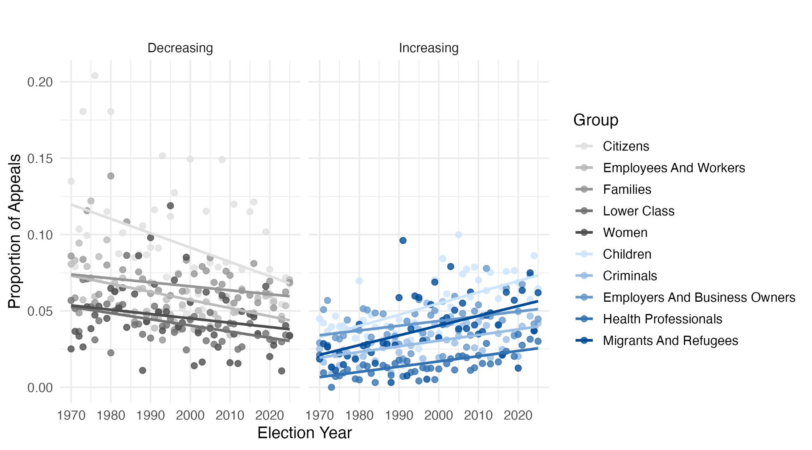
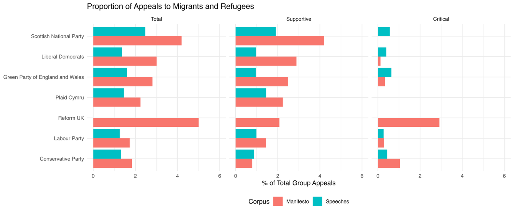

GroupAppeals
A Multilingual Pipeline & Database for Detecting How Parties Talk About Social Groups
Clemson University
University of Birmingham
MZES, University of Mannheim
2026-04-23
Motivation
“From workers to families, from the middle class to migrants — parties don’t just compete over policy, they compete over groups of people.”
- Group appeals shape vote choice, policy support, and affective polarization
- Yet most evidence comes from single-country, hand-coded studies
- No scalable tool to ask, across countries and languages: who do parties speak to, and how?
Measurement is difficult! Existing methods are either accurate-but-tiny (manual coding) or scalable-but-shallow (dictionaries / sentence-level sentiment). We address both.
Our Contribution
1. The pipeline
Four fine-tuned mDeBERTa-v3 models — extract groups, classify stance and policy content, assign 43 substantive categories. Validated in 8 languages.
2. The Python package
GroupAppeals on PyPI + HuggingFace. End-to-end on a laptop. Modular: use the full pipeline or any one model.
3. The PSoGA Database
791 manifestos · 139 parties · 8 countries · 1970–2025. ~304K group mentions, on Harvard Dataverse.
A measurement infrastructure for group appeals — comparable to MARPOR or CHES, but for who parties talk to rather than what they talk about.
Pipeline
What we measure
Per sentence, we extract:
- Groups mentioned (token classifier)
- Stance positive / negative / neutral (NLI)
- Policy directed at the group? (NLI)
- Meaningful category (43 + Other) (multi-label)
All open-weight mDeBERTa-v3 · trained on 7,589 hand-coded sentences (EN + DE)

Step 1 — Extract groups (token classification)
“… direct state support for housing to the homeless and the needy, rather than to the wealthy who already own property.” — Irish Labour, 1989
… to the homeless and the needy , rather than to the wealthy who already own property
Each token labelled 1 (group) or 0; consecutive 1-tokens become a mention → the homeless, the needy, the wealthy who already own property. mDeBERTa-v3 trained on 7,589 EN+DE sentences · F1 = 0.89 exact, 0.96 substring.
Step 2 — Stance & policy (NLI)
Stance — 3 hypotheses per group, take max entailment
Group: the homeless
| Hypothesis “The text is …” | P(entail) |
|---|---|
| positive towards the homeless | 0.84 ✓ |
| negative towards the homeless | 0.02 |
| neutral towards the homeless | 0.14 |
→ stance = positive (F1 = 0.80)
Policy — 1 hypothesis, threshold
| Hypothesis | P(entail) |
|---|---|
| “This text contains a policy directed towards the homeless” | 0.87 ✓ |
| “This text does not contain a policy directed towards the homeless” | 0.13 ✓ |
→ policy = yes (F1 = 0.90)
Why NLI? A single sentence can express different stances toward different groups. By naming the group inside the hypothesis, one model handles every group — including ones not seen in training.
Run once per (sentence, group) pair. The same model architecture answers stance and policy with different hypothesis templates.
Step 3 — Categorise each group (multi-label)
Each of the 43 categories is its own binary label. Every label that crosses 50% probability is coded as a “1”, so intersectional groups are captured.
| Group span | Categories assigned |
|---|---|
| the homeless | Homeless |
| the wealthy who already own property | Upper Class |
| single mothers | Women · Families |
| elderly migrants | Elderly People · Migrants & Refugees |
| working-class women | Working Class · Women |
F1 = 0.87, macro-averaged across the 43 categories.
Multi-label, not multi-class. A span can — and often does — receive more than one label. The 43-category scheme treats labels as independent dimensions, so we don’t lose intersectional content by forcing every mention into a single bucket.
Multilingual
Trained on 2 languages, validated in 8
| Language | Token | Stance | Policy | Cat. |
|---|---|---|---|---|
| English (baseline) | 0.92 | 0.82 | 0.86 | 0.88 |
| German (training) | 0.89 | 0.79 | 0.86 | 0.86 |
| Dutch | 0.89 | 0.76 | 0.85 | 0.82 |
| Danish | 0.89 | 0.77 | 0.84 | 0.82 |
| Spanish | 0.90 | 0.80 | 0.86 | 0.82 |
| French | 0.90 | 0.79 | 0.84 | 0.82 |
| Italian | 0.91 | 0.81 | 0.85 | 0.81 |
| Swedish | 0.89 | 0.78 | 0.86 | 0.80 |
500 sentences coded in EN, machine-translated and verified by native-speakers.
Loss outside training language is small.
- Token: −2 to −3 pts
- Stance: −4 pts
- Policy: ~0
- Categorisation: −6 to −8 pts (still all > 0.80)
Cross-lingual transfer holds: the pipeline can be applied to comparative corpora without re-training. Validate new langauges!
Why not just use Claude / GPT?
| Task | Fine-tuned | Claude 4.5 25-shot |
|---|---|---|
| Extraction | 0.92 | 0.92 |
| Stance | 0.82 | 0.74 |
| Policy | 0.86 | 0.78 |
| Categorisation | 0.88 | 0.82 |
655 EN validation sentences. Few-shot examples drawn from outside scoring set.
- LLMs match on extraction, but trail on every classification task
- Few-shot gains plateau at 5 → 25 examples
- ~$8 to run our 655-sentence test through the pipeline; ~$8K to do a 655K-sentence corpus through Sonnet (~$40K through Opus)
- Plus: encoder weights are versioned, open, and reproducible
Usability
The Python package
from groupappeals import Pipeline
pipe = Pipeline(device="mps") # or "cuda" / "cpu"
results = pipe.run([
"We will defend pensioners' triple lock and crack down on benefit cheats.",
"Migrants who play by the rules are welcome here."
])
results.head()
# text group stance policy category
# 0 We will defend pensioners' triple lock and ... pensioners positive True Elderly People
# 0 We will defend pensioners' triple lock and ... benefit cheats negative True Criminals
# 1 Migrants who play by the rules are welcome ... Migrants positive False Migrants and RefugeesModular by design. Run the full pipeline, or just extract_groups(), classify_stance(), classify_policy(), categorize() — useful when you already have group spans, or only need stance.
~45 min for 10K sentences on CPU; ~4.5 hours for 213K sentences on Apple MPS.
Dataset
The PSoGA Database
791
manifestos
139
parties
8
countries
1970–2025
55 years
Two datasets, released together:
- Sentence-level: every group mention with its stance, policy flag, and category
- Manifesto-level: aggregate share of appeals to each of 44 categories, comparable to MARPOR or CHES
~304K group mentions in 39% of sentences 71.5% positive · 8.4% negative · 20.1% neutral
Countries: Austria, Denmark, Germany, Ireland, the Netherlands, Spain, Switzerland, the UK
On Harvard Dataverse — open, with full codebook & replication code.
Face validity: groups by party family

Keyness (χ²) of groups by party family. Radical Left → workers, women, LGBTQI · Radical Right → migrants, criminals · Agrarian → farmers · Christian Democrats → families and religious communities. The pipeline recovers patterns we’d expect a priori.
Application
Group appeals are restructuring

Five categories with the steepest upward trends (blue) and steepest downward trends (grey), 1970–2025, across 8 countries. Migrants & refugees, criminals, employers, health professionals, children climbing; employees and workers, lower class, families, women, citizens declining — consistent with the cleavage transformation literature, but now measured directly on the supply side.
Manifestos vs. parliament: UK 2024

Same parties, two stages.
- All parties appeal to migrants more in manifestos than in speeches
- Reform UK: 5 % of manifesto, 0 % of speeches by its lone MP
- Critical appeals from SNP, LibDems, Greens in parliament reflect opposition to government policy, not hostility to the group
- Pipeline transfers from manifestos to speeches with only modest accuracy loss (mostly precision on “the member” mentions)
Take-aways
Measurement
A four-model pipeline that beats prompted LLMs on classification, at a fraction of the cost, fully open and reproducible.
Scope
Validated in 8 European languages with minimal performance loss outside the training langauges.
Infrastructure
Python package (groupappeals) + 791-manifesto database (PSoGA): ready for representation, communication, polarization, and party-competition research.
Where to find it
pip install groupappeals· HuggingFace:groupappeals/*- PSoGA Database — Harvard Dataverse
- Methods paper under review,· Dataset paper forthcoming (BJPolS)
Thank you — questions welcome. rwhorne@clemson.edu